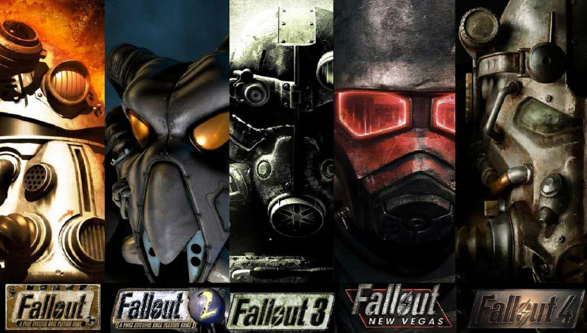
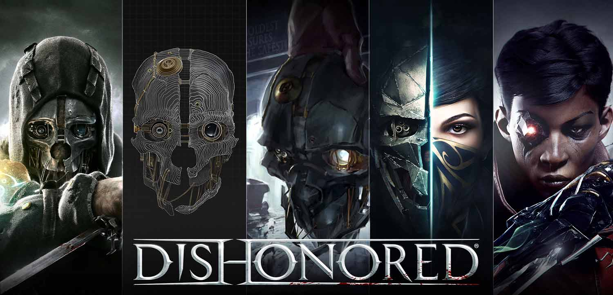
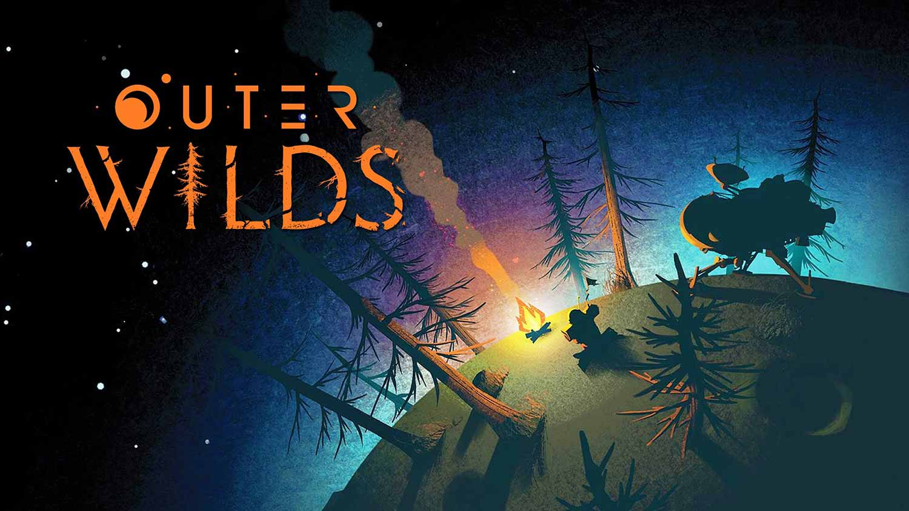
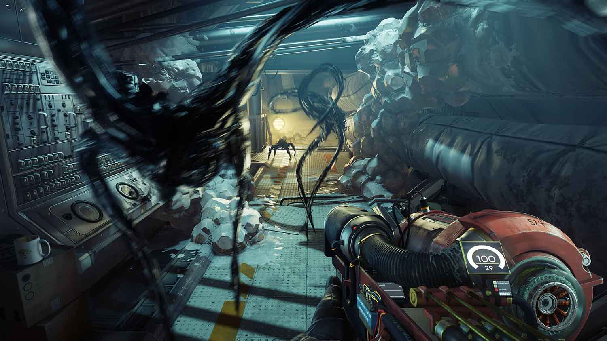
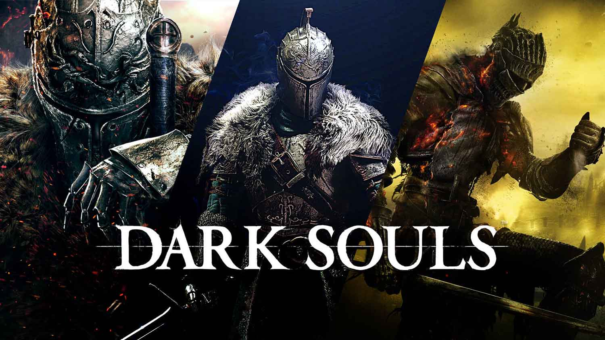

Why These Games?
Over the years I have played many games across various platforms. Here are some of favorite single player games, keep in note that they are not in any particular order and might change from time to time.
All of these games holds a special in my heart, they are either rich in story, lore or world building. These are the things I love in single player games. Diving into another world and exploring it, to learn of the lore and explore the intriguing level design.
Game Design is a very interesting topic for me, thus games with intresting features, wheather it be in level design, unique gameplay or rich story telling always attracts me. In fact working as a game developer is something that i am very intrested in.
-
Fallout Series
Fallout is a series of post-apocalyptic role-playing games produced and published by Bethesda Softworks, originally by Interplay Entertainment. Although set in and after the 22nd century, its story and artwork are heavily influenced by the post-World War II nuclear paranoia of the 1950s. The series is lightly based on the Mad Max film series, and is sometimes considered to be a spiritual successor to Wasteland.
-
Dishonered Series
Dishonored is a series of action-adventure games played from a first-person perspective. In the games, the player explores vast sandbox levels to assassinate different targets or complete quests. The player assumes control of an assassin who has access to various supernatural powers, which can be used to navigate a level and defeat enemies. The player can collect runes to upgrade their superpowers, or equip bone charms to unlock further boosts. Dishonored is commonly described as a series of immersive sims. The player is given freedom how they approach their objectives. For instance, the player can use stealth to avoid detection, use powers to eliminate enemies without being noticed, or directly confront opponents using the weapons and the supernatural powers. It is possible for players to complete these games without killing a non-playable character.
-
Outer Wilds
Outer Wilds is a 2019 action-adventure game developed by Mobius Digital and published by Annapurna Interactive for Microsoft Windows, Xbox One, and PlayStation 4. The game features the player character exploring a solar system stuck in a 22-minute time loop, which ends as the sun goes supernova. The player continually repeats this cycle by gaining knowledge, which is retained, that can help them on later loops. The game received critical acclaim and won several awards, including for game of the year.
-
Prey
Prey is a first-person shooter with role-playing game elements and strong narrative, inspired by System Shock 2. The player takes the role of Morgan Yu, a human aboard a space station with numerous hostile aliens. The player is able to select certain attributes of Morgan and make choices that affect elements of the game's story. To survive, the player controls Morgan collecting and using weapons and resources aboard the station to defeat the Typhon. Prey is not an open-world game but it features open-level gameplay similar to Arkane's Dishonored.
-
Souls Series
Souls is a series of action role-playing games developed by FromSoftware. The series began with the release of Demon's Souls for the PlayStation 3 in 2009, and was followed by Dark Souls and its sequels, Dark Souls II and Dark Souls III, in the 2010s. The games take place within a dark, medieval fantasy setting, where the player's character fights against knights, dragons, phantoms, and demons and other entities monstrous or supernatural. The accretion, loss, and recovery of souls is central to the narrative and gameplay of Souls games. Another recurring motif is that of a once powerful and prosperous kingdom which has fallen into ruin: for example the setting of Demon's Souls, Boletaria, in which the player attempts to halt the spread of a demon-infested fog that threatens to consume the world.